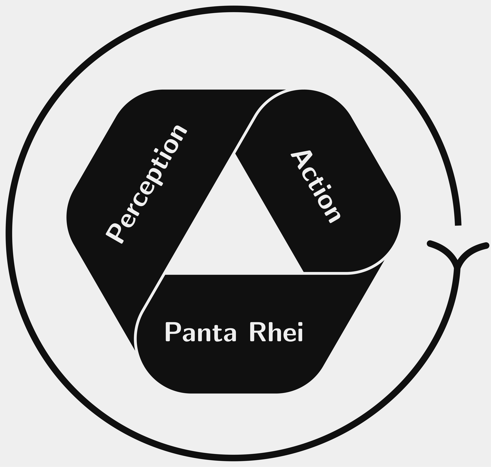

Noah Guzmán
Theoretical Neuroscientist || Philosopher || Data Scientist

Theoretical neuroscientist with a philosophical bent.
Experience in dynamical systems theory, experimental neurobiology, computational ethology, and Bayesian inference.
Interested in olfaction, birdsong, anticipation, allostasis, neural field theory, and learning.
Working in the traditions of embodied cognition, ecological psychology, neuroethology, developmental systems theory, and the extended evolutionary synthesis.
Projects in the philosophy of mind, philosophy of science, and metaphysics.